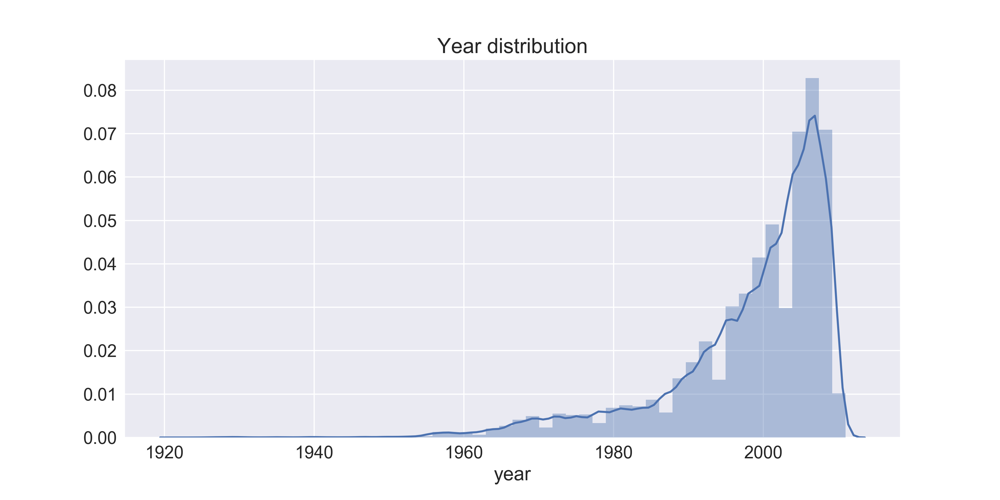

Evolution of music genres
by Thibaut Chamard - Noé Gallice - Mathilde Mareite
Posted on December 12, 2017

Authors
- Thibaut Chamard
- Noé Gallice
- Mathilde Mareite
Million Song Dataset (MSD), a famous dataset with freely available collection of audio features and metadata for a million contemporary popular music tracks.
There are many attractive features in the MSD. Here, we want to focus on the year, location and genre of a song. Based on these features, for each year, we define the most prolific types of music over time and understand their evolution. The purpose of this project in Robert West's CS-401 Applied Data Analysis (ADA) class of Fall 2017 at EPFL is to show the evolution of the music genres over time and space.
A subset of 10.000 songs from the dataset we used for this project is avalaible for download here.
What are the main music genres ?
Music comes in many different types and styles ranging from traditional rock music to world pop, easy listening and bluegrass. Many genres have a rich history or geographical significance, a cult following or music roots that go far beyond the 20th century. In order to model the genre of a song, we defined a list of the 12 most popular genres:

We have drawn up this list based on our research, but obviously this list is strongly debatable. We also classified a list of subgenres related to every genre which included some tough decisions and long debats. In no case, we want to offend or hurt someone with this list but until the end of the article we will assume that a genre is defined according to this list. You can click on a genre to see his subgenres:
Dataset description
The entire dataset is 280GB, but since for some of the songs the information on the year is missing, we have limited the number of songs of our study to about 162 000 songs in our final dataframe.
The dataset contains songs mostly ranging from 1920 to 2010, with a peak in the year 2000s.
We notice that the number of the songs starts to increase significantly in the 1980s, likely coinciding with the invention of the CD and continue to increase the 2000s with the increasing popularity digital format such as MP3.
The MSD contains some Additional files which provide us with all the different tags that define a song.
Those tags will be useful to define the genre of the song. That's why the first part of our work was to match a maximum of those tags to a genre. And it's not a easy task to classify music genre and classify certain song.
For instance the song Soul Deep from The Box Tops has the following tags :
blue-eyed soul pop rock blues-rock beach music soft rock soul classic rock oldies power pop psychedelic rock rock sunshine pop blues singer-songwriter pop male vocalist united states rock 'n roll am pop r&b american male psychedelic classic vocal americana game music mod trippy 60s french germany canada 70s belgium cover nederland confident
We build a dictionnary to match the maximum of those tags to a genre. Above, the color of the tags indicates its genre. Each tag is also associated to a certain weight, so we computed for a song the cumulative weight for each genre, and retain only the genre having the maximun cumulative weight. For instance, the previous song was classified as Rock as the cumulative weight were: Rock 4.3 Pop 3.7 Hip-Hop 2.4 Blues 1.5 Orchestral 0.6
Evolution of music genres over time

The graph below shows the evolution and development of certain music genres over time. It states that Jazz and Blues are loosing popularity over time wheras electronic music which was completly new in the 1980's is becoming more and more popular. Even if everybody knows that the Rock n Roll will never die, it is interesting to see that his popularity pick happened in the 1980s. We can clearly see the creation of metal music in the early 1970s.
The evolution of Hip-Hop music is surprising. We do not expect hip hop to be present in the 60's. At the first sight we thought we missed something but turns out that we can explain this evolution of Hip-hop by the fact that under Hip-Hop we included together Hip-Hop, Rap, Soul music and Rythm&Blues. The first period, from 1960 to 1980, contains a a majority of Soul and Rythm&Blues music wheras the last perio starting in the 90's coincides with the genesis of Rap and Hip-hop music that we know today.
Evolution of music genres over time and space
The maps below show where the artists are from on a heatmap for a genre over time and space. For instance, we can see that the rock music started to grow in the US and then in the UK before to flood the music market all over the world. However, those maps are quite biased by our dataset. Indeed the year distribution shows that we have way more recent music. So obviously, the heatmap gives the feeling that the every genre is growing over the time. In fact it just shows that music production is way more important now. We can explain that becquse nowaday it is easier to record a song and a huge part of our society is based on entertainement. We thing that the main information we can learn from those maps, is the music genre globalization. Indeed we can see that popular regional genre, like Reggea, inspires new artists all over the world. If a genre has a regional root, it often become world wide.
Artist familiarity and hotttnesss
Artist familiarity corresponds to how famous an artist is. You can see familiarity as the likelihood that any person selected at random will have heard of the artist. Beatles have a familiarity close to 1, while an artist like Lucien Foort has a familiarity close to zero.
Artist hotttnesss corresponds to how much buzz the artist was getting in 2011. This is derived from many sources, including mentions on the web, mentions in music blogs, music reviews, play counts, etc. Note that this scores should be updated every year, as it changes a lot over the year.
The following plot shows different Artists in the Artist familiarity and Artist hotttnesss space.
Select a genre on the left to query a subset of Artists to plot.
Hover over the circles to see more information about each Artist.
There is a clear correlation bewteen familiarity and hotttnesss, familiar artists tend to be hotter than non-familiar artists.
Looking at the 100 familiar Artist, the genre main genre Hip-Hop and Pop genre, with Artist like Kanye West (Hip-Hop), Eminem (Hip-Hop), Rihanna (Pop). Those celebrity are getting a a lot buzz explaining the clear dominance of Hip-Hop considering the 100 hotttest Artists. Whereas looking at the 100 less hottt Artists, the proportion of the genres electronica and reggae are high compared to their proportion in the all dataset. (32% / 22% for electronica and 4% / 1.8% for reggae) We could explain this by the fact that most of the Artist from those genres are not well cover and touch less the general public.
The Artist familiarity and Artist hotttnesss space helps also to visualize the up and comings artists (top left: low familiarity and high hotttnesss) as well as the popular artists that are fading away (bottom right: high familiarity and low hotttnesss).
The 1000 hotttest songs
In this part, we analyse the 1000 hotttest songs. We try to see if there is some similarity between those songs, and parcularity to differenciate those hotttest songs from the others, according to some features that you can change with the button on the left. Hover over the circles to see more information about each songs.
Interestingly looking at the 1000 hotttest songs the proportion of Hip-Hop stay identic (7%/8%), despite we saw that this was the main genre considering 100 hotttest artists (65%/11%). This could be intrepreted as Hip-Hop artists are making more buzz with their "personality" than with their music. Rock and Pop music are the main genres among the 1000 hotttest song.
Apart that 1000 hotttest songs, are done by hottter and more familiar Artist. We could not identify particularity of hotttest songs compare to the others looking at some simple features as duration, tempo, loudness.... It could be interesting to realize a deeper research using machine learning tools to see if we can identify the hotttest songs, looking at more complicated features as lyrics, video-clip, structure of the song....
Conclusion